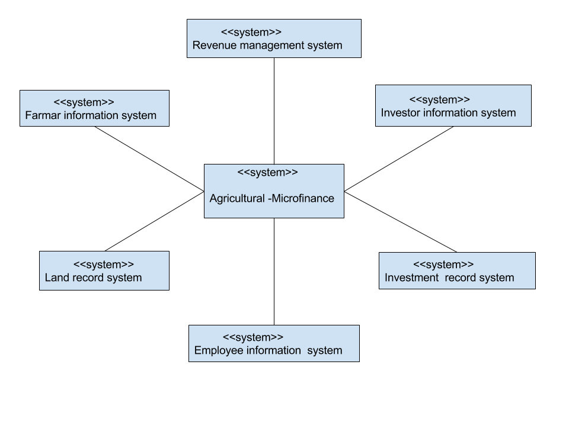

Table of Contents
- Introduction
- Architecture
- Component Design Specification
- User interface issues
- Execution Architecture
- Introduction
- Purpose
- Document Conventions
- Intended Audience and Reading Suggestions
- Product Scope
To give a detailed description of the database design is the main purpose of this Software Design Specification (SDS) for the “Agriculture Microfiinance” (AMF) software. The document will provide developers an insight in meeting client’s needs efficiently and effectively. Moreover the document facilitates communication and understanding of the system by providing several views of the system design.
The document has described architectural design of the “Agriculture Microfiinance” (AMF). The high level components and their interactions, suitable architectural patterns, physical arrangement of components and design decisions applied to the whole system The software does not offer any new terminology making it more user friendly. Anybody with experience of using internet is expected to be able to use the software.
This document is intended for all individuals participating in the AMF project. Readers interested in a brief overview of the product should focus on the rest Introduction, as well the Overall Description, which provide a brief overview of each aspect of the project as a whole.
Readers who wish to explore the features of AMF in more detail should read the System Features, which expands upon the information laid out in the main overview.
The Software design document would explain how the design will fulfill the functional and non- functional requirements captured in the Software Requirement specification (SRS). The document will provide a framework to the programmers through describing the database design, algorithm design, sub systems, interfaces, architecture and the high level components. This is achieved through the use of architectural patterns, design patterns, sequence diagrams, class diagrams, relational models and user interfaces
Architecture
Component Design Specification
- User interface issues
- Execution Architecture
The Context of the Micro-finance
The agriculture micro finance consist of different systems for various purposes. The figure shows a relation between the systems. 
Class Diagram
The class diagram is self explainatory and only shown the entities and strong attributes and relations between them.
Login-Signup

It is the main page where the user can login with their user name and password.After login successfully user can access below page freedomly.
1. Investor-Profile2. Land-Profile
3. Market
4. Profile
Investor-Profile

Here user can see all inversters infomation, contacts no and their history and their investment shares.
Profile

Here the investor can view the farmers and land details for which they are going to invest.
Land-Profile

Here User can see all land information, location, environment, soil information.By viewing the details, the investors can choose which land they would prefer to invest .Transaction can be done by credit or debit card or bikash .
Market
Market contains the information about crop,location,landsize,total budget and rating.From here the user can collect data about lands, crops and with this information user can make be sure that how much they want to invest for which land .
The execution architecture determines largely the real-time and performance behaviour of a system. This is small part of the total sytem architeture.
As soon as the program starts the execution time starts.Here we will have several queries like the user needs to register/log in,search for details about the land,investor profiles etc
User log in: Here the user can create their own account.And get access to the application.
Investors profile: It contains information about investor.Here the investor can check about the review and investor who already invested for the land.And can view investor rating ,history etc.
Profile: This profile contains information about land and farmer.Here the investor can view the details about the land and can feel secured to invest.
All types of information will be saved in our database so that the next time the user log in,they get the similiar suggestion and donot need to put their information over and over again.